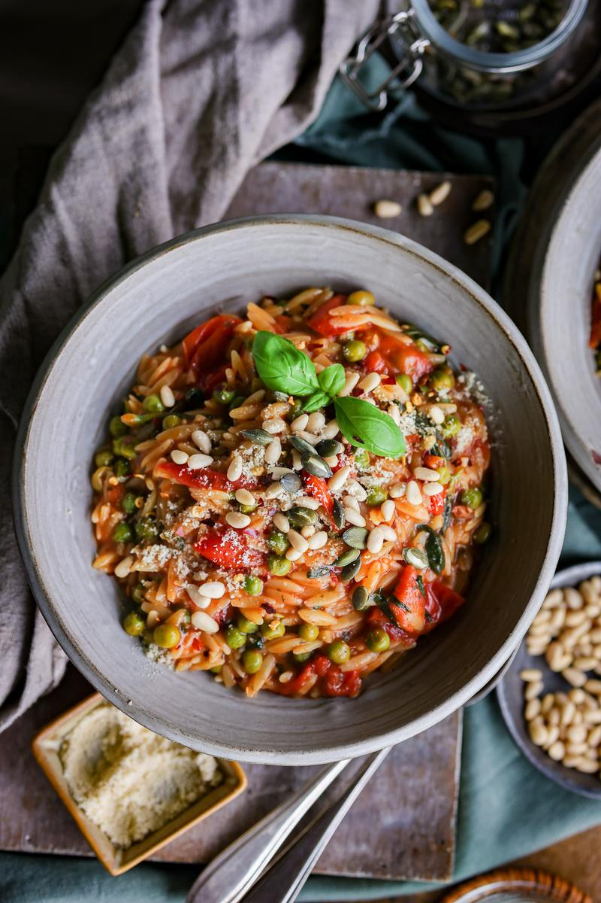

Creamy Tomato Orzo Recipe

Recipe Courtesy of Pick Up Limes
This is a recipe I'd like to try one day; I'm a huge fun of orzo dishes. It's borrowed from Pick Up Limes.
This simple and speedy recipe for creamy orzo uses fresh cherry tomatoes to create a flavorful base, and is topped off with crunchy roasted pine nuts, making it the perfect meal for busy days.
Ingredients
- 2 tsp (10 mL) olive oil
- 3 cups (447 g) cherry tomatoes
- 2 cups (480 mL) water
- 1 tablespoon sugar
- 1 cup (170 g) dry orzo pasta
- ½ Tbsp (1 g) Italian spice mix
- ⅛ tsp ground black pepper
- ¾ cup (100 g) frozen green peas
- ¾ cup (18 g) fresh basil, torn
- 1 Tbsp (8 g) roasted pine nuts
- ¼ tsp chili flakes (optional)
Steps
- Add the oil to a sauté pan on high heat. Add the tomatoes and cook for 3 minutes.
- Then add the water, orzo, bouillon, Italian seasoning, and pepper.
- Cook at a gentle simmer for 10 minutes, until the orzo is al dente. Stir occasionally, and mash the tomatoes with the back of the spatula to extract their flavour and juices.
- Then add the peas and basil. Cook for 1 - 2 more minutes.
- Garnish and enjoy!